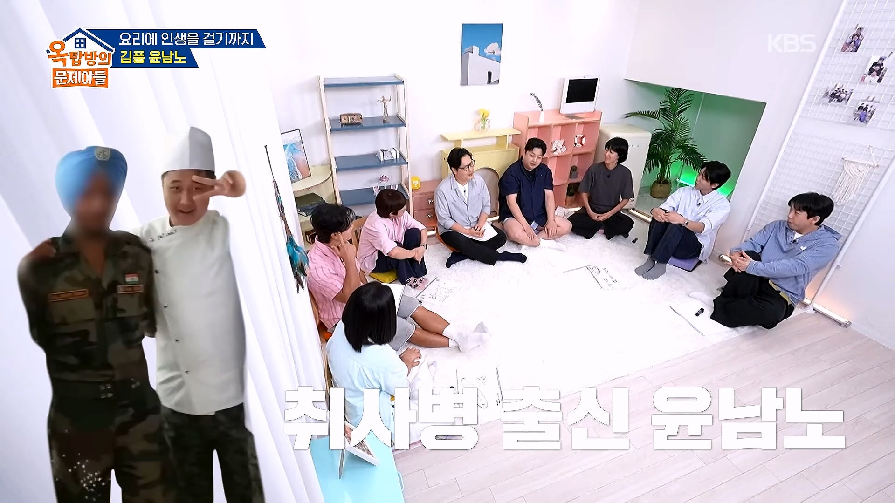
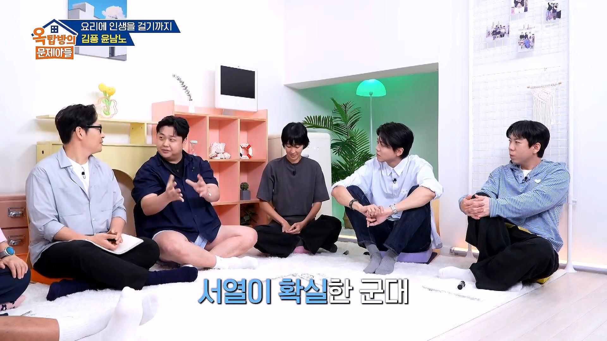
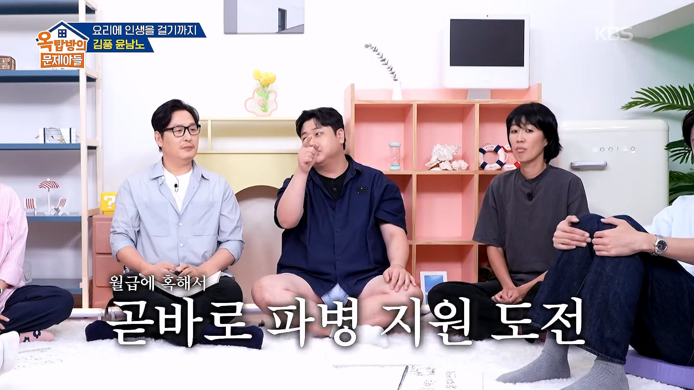
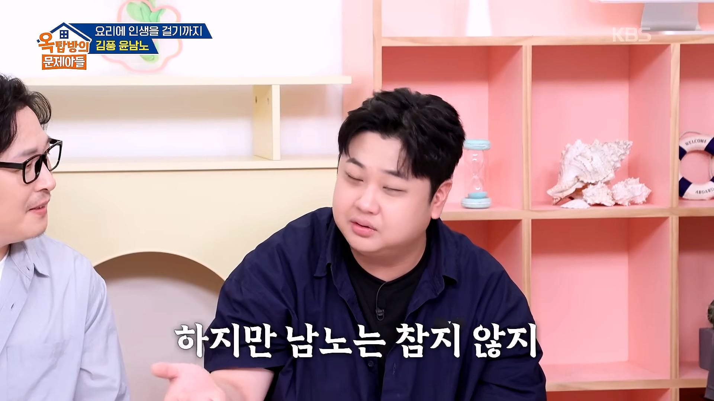
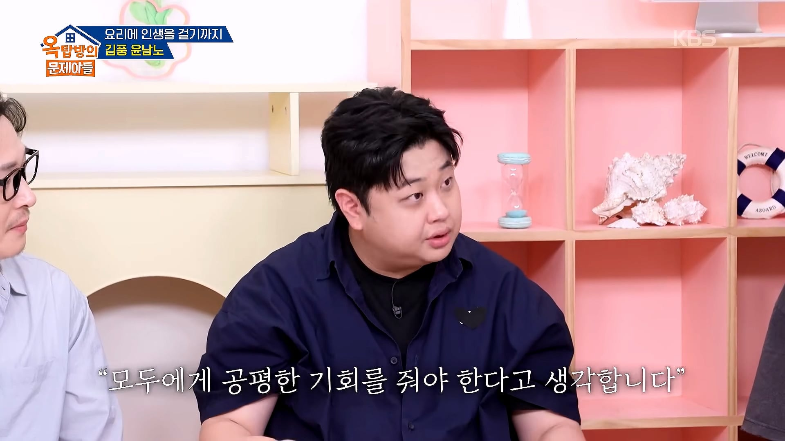
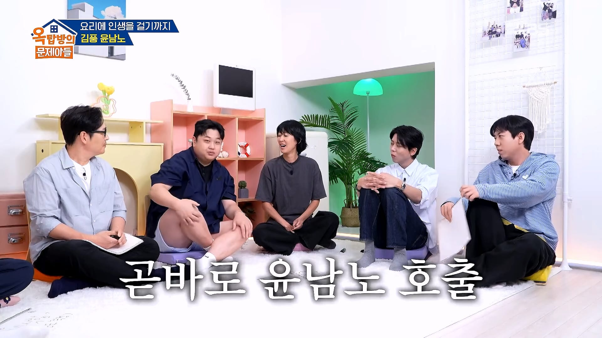
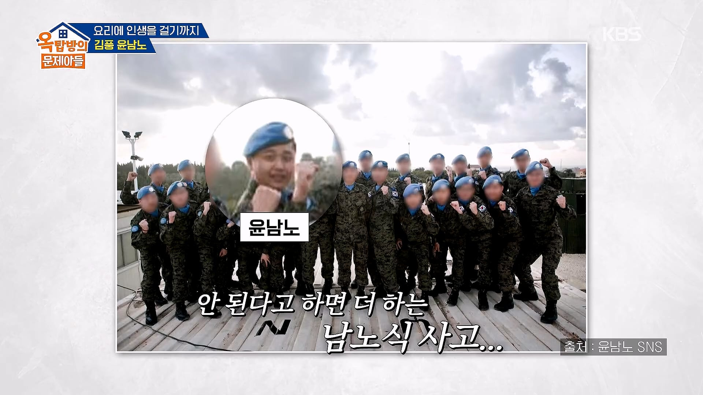

저거 요리가 맘에 들었거나 '자기 당번병'이라고, 본인 의지로 못나가게 하려고 일부러 파병지원 결재를 안받아주는거야
어우 ㅆ놈이었네
우리도 당번병될 애가 파병 지원했다고 부대에서 파병 지원한거 위로 아예 안올렸었음
특수 보직 간취면 요리사 특기인애 그하기힘들어서
더 안받아준거임
ㄹㅇ 구하기 힘든 인재긴하지
걍 인원빠지면 당장 인력부족해 귀찮다고 파병 쓰지말란놈들 항상있음 ㅋㅋ
열심히 사시네
사관취사병이라고 일부러 파병 신청 막았나보네 개새끼들 ㅋㅋ
파병은 모든병사가 가고싶어했음
부대에서는 인원빠지니까 간부들이 싫어했고
파병가면 돈 많이주지, 자대보다 훨씬 편하지, 아이패드쓰는 병사도있었음(파병끝나고 자대복귀할때 패드 가져오더라), 그리고 한국군이가는 파병은 존나 안전한지역으로만 감
자격요건되는 간부들도 마찬가지임
가고싶어서 일단 지원서 넣었었는데 진짜 미친듯이 갈구더라
ㄹㅇ 부대장 호출 들어옴
해군 파병 분위기랑은 많이 다르네
와 이건 첨알았네
차출되는 자리 to 채워주는게 아니라서 빠듯하게 굴러가는 부대에서 무작정 보내달라고 지랄하면 좀 그렇긴함 ㅋㅋ
...... 그걸 병사가 이해해야하는 부분인가? 군대가 아닌 자기 발로 들어간 회사에서 조차 이해득실에 따라 부서이동 신청하고 이직하는 게 당연한데?
내가 느끼기엔 간부들이 평균적으로 더 이기적으로 자기 이익만 보고 행동하던데? 물론 군대가 직장이니 당연하다면 당연한 거겠지만..... (어차피 수 없이 스쳐가는 미물들 중 하나라고 생각하는 거겠지)
큰 문제없이 일하던 인원이 빠지면 어느 조직이든 불편한건 당연한건데 서로서로 적당히 알아서 하는 거지....
아닌말로 부대에서 간부들이든 선임들이든 전부 잘 챙겨줬으면 파병 지원하려고 육본에 편지까지는 안 썼겠지....
오 ㅋㅋㅋ 기어이 갔다왔네
존나 강하긴하네
붙어서 다행이지 떨어지면...
근무할 때, 파병으로 빠지고 싶더라.. 22 55였음..
저렇게빠지면 인원보충 늦게해주는데 직접적인 연관인 간부취사병이니 결재라인을 잘랐겠지
나도 파병 지원이라도 하고 싶었는데 상말이라 신청도 못했슴..
원래 기회는 다 줬음. 근데 갈수 있는 보직들이 있었고 아니면 빽이 좀 많이 든든해야 갔던 기억이 남. 우리 부대 한명 갔는데 ㅋㅋㅋ
와 돈많이주네 윤남노 군번이면 병장월급 10만원일때인데
11이면 10만원도 안됐을걸
11년 7월군번인데 월급 조금씩 오르던 시기였음 나 병장 월급 15만원인가 받았음
머지 나 13인데 이등병때 7-8 병장때 15쯤 받았던거 같은디
11년이면 10만원은 넘음
특수병과나 언어관련 아니면 보병병사쪽은 파병이 안된다고 했었는데
공병이 파병가기엔 좋음 삽질할때 특전사가 경계서줌
난 너 가면 나도 갈거라고 담당부사관이 붙들어서 못갔는데 지금생각하면 같이 가는게 나았을거같음
잠수함 강제로 차출되고 참모총장한테 왜 가기 싫은 사람 억지로 데려가냐고 메일 보낸 미친놈이 생각나는구만
파병가고 싶다고 이야기했다가 개갈굼 당했던 후임 생각나네 ㅋㅋㅋㅋㅋㅋㅋ
나도 파병갈까 했는데 군대 동기들 너무 의지되고 좋기도해서 안갔는데 짬먹고 서로 싸우고 전역하고 연락 한명도안됨 ㅋㅋ 파병이나갈껄
새 사람받아서 가르치기 귀찮다는 이유로 많이들 방해하지 않냐
선임이 갈구는게 젤 흔했는데
중대장 대대장 건너뛰고 바로 육본에ㅋㅋㅋㅋ
저게 본명이었나 보네?
중대장, 대대장 입장도 들어봐야한다 이건ㅋㅋ